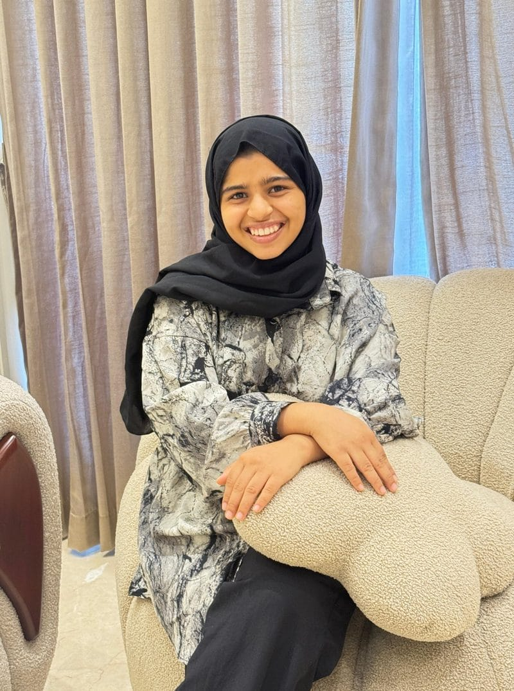

HTML
Web page structure and content.
WELCOME TO MY PORTFOLIO
I'm a Computer Science Engineering student passionate about building practical technology solutions through software development, creative problem-solving, and innovation. From full-stack applications to hardware-integrated projects, I enjoy transforming ideas into meaningful solutions that make a difference.
Let's build something meaningful together.

Creating technology with purpose.
GET TO KNOW ME
I am a Computer Science and Engineering student with a strong interest in software development, technology, and solving real-world problems through practical solutions.
I enjoy exploring how technology can make everyday life easier and more accessible. My interests include full-stack development, application development, database technologies, and the integration of software with hardware. I value teamwork, continuous improvement, and learning through hands-on experience.
I believe that every project is an opportunity to strengthen my technical knowledge, think creatively, and develop solutions that can make a meaningful difference. I am looking forward to applying my skills, gaining practical experience, and growing as a software developer.
MY TOOLKIT
Technical skills and personal strengths I bring to my work.
Web page structure and content.
Page styling and responsive layouts.
Web page behaviour and interactivity.
Programming fundamentals and logic.
Managing application data.
Version control and code repositories.
Adapting to new concepts and technologies.
Collaborating on shared project goals.
IDEAS INTO ACTION
Projects exploring software, hardware, accessibility, and everyday problem-solving.
HACKATHON · SOFTWARE + HARDWARE
A data-center monitoring project designed to monitor temperature and humidity. Its hardware component is intended to activate a cooling fan when the temperature rises, supporting more responsive environmental monitoring.
Ask About This Project ↗CARE SUPPORT APPLICATION
An application designed around seniors and caregivers, with dedicated user experiences intended to support care-related coordination and accessibility.
View Project ↗ACCESSIBILITY · HARDWARE
An assistive communication prototype that interprets user-entered Braille and displays the decoded message on an OLED screen. Voice-related features are also being explored to improve communication accessibility.
Ask About This Project ↗WEB DEVELOPMENT
A platform concept connecting surplus food providers with people and organisations that can use donated food, helping reduce waste and improve access to available food.
View Project ↗DIGITAL WELLBEING
A wellbeing-focused application concept exploring different experiences for students, couples, and older adults, with features designed to encourage user engagement.
Ask About This Project ↗PERSONAL FINANCE
An application concept for recording income and daily expenses, helping users review spending and understand their remaining balance.
View project ↗MY ACADEMIC JOURNEY
UNDERGRADUATE DEGREE
Bearys Institute of Technology, Mangalore
Expected Graduation: 2028
CGPA: 9.01
HIGHER SECONDARY
SATHSS Manjeshwar
Year of Completion: 2024
SECONDARY SCHOOL
Baliyoor English Medium School
Year of Completion: 2022
LET'S CONNECT
I'm always open to connecting with professionals, exploring new opportunities, and contributing to meaningful projects. Feel free to reach out for collaborations, technical discussions, or internship opportunities.